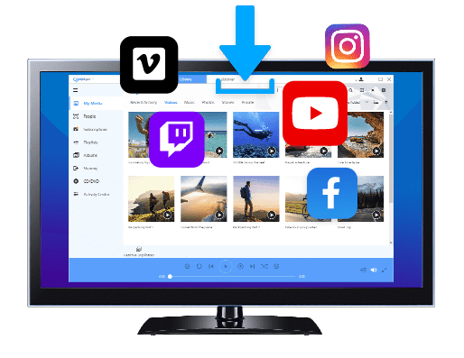
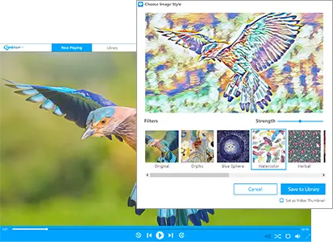

RealPlayer 到底能做什么——从下载到媒体库的完整能力盘点
RealPlayer 早就不是当年那个只能播 RMVB 的老播放器了。本文从视频下载、媒体库管理、投屏多端、格式兼容等几个维度，系统梳理它当前版本的能力边界，帮你判断这个软件值不值得留。
开头：为什么要盘点 RealPlayer
很多人对 RealPlayer 的印象还停留在 RMVB 时代——那个默认装在 Windows 里、界面花哨但解码能力一般的播放器。它的realplayer官网上现在主推的早就不是播放功能了——近几年 RealNetworks 一直在悄悄重构这套产品线，把 RealPlayer 从一个「播放器」往「视频管家」的方向拉。现在的版本里，下载、管理、转换、投屏这些环节全都覆盖了，而且四个版本（Free / Express / Plus / Premium）之间的功能切割非常细，一不小心就会多花钱或者花少了体验打折。
这篇盘点的目的不是推荐你升级哪个版本——而是把 RealPlayer 当前能做的事情完整摊开，让你对照自己的使用场景判断它有没有资格留在你的电脑里。
视频下载：RealPlayer 最核心的差异化能力
如果说播放器市场 VLC 和 PotPlayer 还能打个平手，下载这块 RealPlayer 是真的有独家货。
Smart Download 是入口级的体验。安装包从官方下载拿，装完浏览器里会自动启用扩展，浏览 YouTube、B 站、Twitter 这类支持的站点时，视频右上角会自动出现一个「Download This Video」按钮——点开就进自定义流选择面板。付费版（Express 及以上）能按分辨率、编码、帧率甚至音频语言轨精确挑流，不是所有下载器都能做到这么细。8K 分辨率下载、无限并发、直播录制这几个能力，Free 版是没有的，升级 Express 一次性买断就能解锁全部。

纯音频提取是高频被低估的小功能。很多播客、访谈、MV 其实只需要声音——RealPlayer 付费版可以直接从源视频里把音频轨抽出来存成 MP3 或 M4A，文件体积通常是原视频的五分之一到十分之一。对比那些动不动弹广告、劫持下载的在线音频提取站，RealPlayer 内建这条路的速度和稳定性都好得多，而且不会把你的视频链接送到第三方服务器。
值得提的一个细节：RealPlayer 的纯音频提取是直接抓源视频里已经存在的音频轨，不会做重编码。这意味着音质上限取决于源视频本身——低码率的视频提出来的 MP3 还是那个码率，别指望它能「提升音质」。
媒体库管理：从播放器到管家的第二步
下载完的视频不能堆在硬盘里当散装文件——RealPlayer 的媒体库在帮你整理这件事。
人物识别自动分组是个有趣的功能，而且四个版本都有。RealPlayer 会扫描视频里的人脸，把出现同一人物的视频自动归到一个组里。对那些收藏了大量访谈、演讲、综艺片段的人来说，这个比手动建文件夹省心多了。不过识别准确率受光线和角度影响大，别抱太高期待。
Private Mode 隐私视频库是 Plus 和 Premium 才有的功能。你可以给敏感视频加一个独立的加密库，需要密码才能打开，而且这些视频不会出现在主媒体库的搜索结果里。对有孩子或者共享电脑的家庭来说，这是个实用的小保险。
格式转换和视频裁切也是 Plus 往上才解锁的。RealPlayer 内建的转换器偏基础——能转 MP4、AVI、MKV 这些常用格式，但参数调节空间有限。如果你只是想把下载的 WebM 转成手机能播的 MP4 扔给家人看，它够用；但要做精细转码还是 HandBrake 更专业。
投屏与多端：Chromecast 和 Mobile 伴侣
RealPlayer 支持 Chromecast 投屏，而且这个功能 Free 版就有。在 RealPlayer 里找到视频，右键选「Cast to Chromecast」就能推到电视上播，手机端也能通过 RealPlayer Mobile 伴侣 App 控制播放进度、音量甚至下一个要播的视频。
RealPlayer Mobile 伴侣是一个跨平台的小 App（iOS 和 Android 都有），可以：
- 远程浏览电脑上的 RealPlayer 媒体库
- 把电脑里的视频同步到手机（或者反过来）
- 用手机当遥控器控制电脑端 RealPlayer 播放
Plus 版往上还有 RealPlayer Cloud（Premium 版 25GB 专属），可以把媒体库的精选视频自动备份到云端，换电脑或者重装系统时不用重新下载。
版本对比：Free / Express / Plus / Premium 到底差在哪
这是最容易踩坑的部分。RealPlayer 把功能拆得非常细，每升一个等级解锁的东西都不一样。

Free 版只适合想先试试、偶尔下一个视频的人。720p 下载上限、无 YouTube 集成、无直播录制、有界面广告——你能用它看视频，但下载这块的核心能力基本被锁死了。
Express（$24.99 买断）是性价比最高的一档。一次性付清，解锁 8K 下载、自定义流选择、YouTube 全家桶（登录 + 私有视频 + 订阅 + 播放列表）、直播录制、AI Capture 滤镜抓帧、无限并发。如果你主要把 RealPlayer 当视频下载器用，Express 就够了，不用再往上花。
Plus（$39.99 买断）在 Express 基础上加了 DVD 刻录、Private Mode 隐私库、视频裁切、格式转换、高级均衡器、重复文件清理、去广告。适合在下载之外还想顺手做一点媒体管理工作的人。
Premium（$4.99/月或 $49.99/年）是订阅制，比 Plus 多了 25GB Cloud 云存储。注意从买断制切到订阅制意味着放弃永久使用权——取消订阅后 Plus 专属功能会被锁回去，已经用 Plus 刻录的 DVD 和转换好的文件不受影响。年付比月付省约 $10。
格式兼容：RealPlayer 打不开文件怎么办
RealPlayer 支持的主流格式覆盖 MP4、WebM、MKV、AVI、FLV 这些日常场景，但边缘情况还是会遇到——比如 MKV 里装了 DTS 音频、或者 HEVC 4K 视频卡得动不了。更详细的编解码支持列表可以去realplayer文档查。
遇到格式不支持，先排除三种假象：Windows 文件关联乱了（右键手动用 RealPlayer 打开试试）、文件损坏（VLC 容错性好，用 VLC 试一下）、硬解不了 HEVC（降分辨率播放）。排除完真·不支持的情况，有三条路：
- 等 RealPlayer 自动推送解码器更新——绝大多数新格式靠这条就能解决
- Plus 版转码成 MP4/H.264 再导入——适合必须进媒体库的文件
- 直接换 VLC 或 PotPlayer 看完拉倒——极小众格式（OGG Opus、老 RV10）没必要硬折腾
DRM 加密的 Netflix、Disney+、Amazon Prime Video 视频完全不在 RealPlayer 的支持范围内，也不应该尝试破解，用官方 App 看就好。
短板也要说
盘点 RealPlayer 不能只说它能做什么，也得说它做不了什么。
播放器本身的解码能力不如 VLC 和 PotPlayer。RealPlayer 的优势在下载，不在播放。遇到小众编码（DTS、TrueHD、OGG Opus），RealPlayer 大概率打不开或者没声音，VLC 几乎能播一切。
内建转换器偏基础。能转，但参数调节空间小，不支持批量任务，做精细转码还是 HandBrake 或 FFmpeg 更合适。
Free 版有界面广告，而且 720p 下载上限比较尴尬——现在很多 YouTube 视频默认就是 1080p，Free 版会自动降质。
DRM 加密内容完全不能碰，也不应该碰，这条是版权红线。
什么样的人该用 RealPlayer
最后画个像，看看你是不是 RealPlayer 的目标用户。
把视频下载当刚需的人：每天都要从 YouTube、B 站、Twitter 拉视频，需要精确挑流（分辨率、编码、音频轨）、需要直播录制、需要无限并发——Express 版买断是性价比最高的选择。
收藏大量视频素材需要整理的人：人物识别自动分组、Private Mode 隐私库、重复文件清理这几个功能能帮你把散装视频归拢成一个像样的媒体库，Plus 版全包。
想要一站式方案、不想装太多软件的人：RealPlayer 把下载、播放、管理、投屏串成了一个闭环——浏览器里点下载 → 进媒体库 → 推 Chromecast 到电视，全程不用切换工具。这个闭环体验是分散式工具链比不了的。